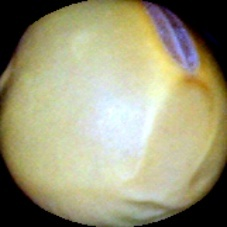
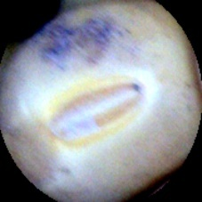
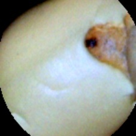
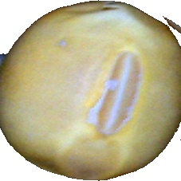
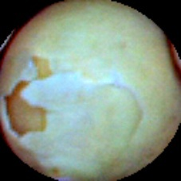

Qué vamos a hacer
Entrenar un clasificador que distinga granos sanos de granos dañados a partir de fotos, con Teachable Machine, una herramienta de Google que funciona en el navegador y no pide crear una cuenta. Después lo vamos a poner a prueba con tres desafíos, para ver qué aprendió y qué no.





Descomprimí el archivo antes de empezar. Adentro hay una carpeta por paso.
1. Entrenar
- Abrí Teachable Machine, proyecto de imagen y elegí el modelo de imagen estándar.
- Cambiá el nombre de la primera clase por Sano. Usá la opción para subir imágenes y elegí todas las fotos de
entrenamiento/sano. - Cambiá el nombre de la segunda clase por Dañado y subí todas las fotos de
entrenamiento/danado. - Tocá Entrenar modelo y esperá. No cierres la pestaña mientras entrena.
Los nombres de los botones pueden cambiar un poco según la versión de la herramienta.
2. Probar con granos que no vio
En la vista previa, cambiá la entrada de la cámara a archivo y subí, de a una, las fotos de la carpeta prueba. Anotá qué dice el modelo para cada una y con qué seguridad.
Debería acertar casi siempre: son granos parecidos a los del entrenamiento, fotografiados igual.
3. Desafíos
- Otro fondo. Subí las fotos de
desafio-fondo: son los mismos granos de la prueba, con el fondo negro cambiado por blanco. ¿Sigue acertando? Si se equivoca, ¿qué había aprendido, además de los granos? - Lo que no vio. Subí las fotos de
desafio-no-visto: granos con la piel dañada, un tipo de daño que no estaba entre los ejemplos. ¿Qué dice? ¿Por qué? - Desbalance. Empezá un proyecto nuevo y entrená con
desafio-desbalance: 30 sanos y solo 3 dañados. Volvé a probar con la carpetaprueba. ¿Qué cambia?
Para quien dicta
Respuestas de la carpeta de prueba
- prueba-01: dañado (partido)
- prueba-02: sano
- prueba-03: dañado (manchado)
- prueba-04: sano
- prueba-05: dañado (manchado)
- prueba-06: sano
- prueba-07: sano
- prueba-08: dañado (manchado)
- prueba-09: sano
- prueba-10: dañado (partido)
- prueba-11: sano
- prueba-12: dañado (partido)
Las fotos de desafio-fondo tienen el mismo número que las de prueba (fondo-01 es prueba-01). Las de desafio-no-visto son todas granos dañados.
Probar el flujo completo antes de la clase: el resultado de cada desafío depende de cómo entrene el modelo ese día, y conviene saber qué va a pasar.
De dónde salen las fotos
Lin, W., Fu, Y., Xu, P., Liu, S., Ma, D., Jiang, Z., Zang, S., Yao, H. y Su, Q. (2023). Soybean Seeds (versión 6) [conjunto de datos]. Mendeley Data. https://doi.org/10.17632/v6vzvfszj6.6. Descripto en Soybean image dataset for classification, Data in Brief, 48, 109300 (doi:10.1016/j.dib.2023.109300). Licencia CC BY 4.0.
Cambios: se tomó una muestra de 78 fotos de cuatro clases, se renombraron los archivos y, en las de "otro fondo", se reemplazó el fondo negro por blanco.